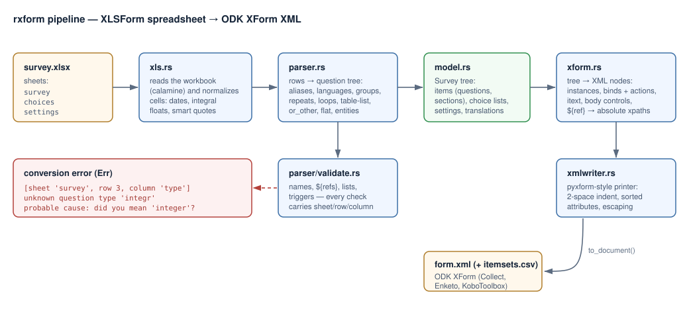
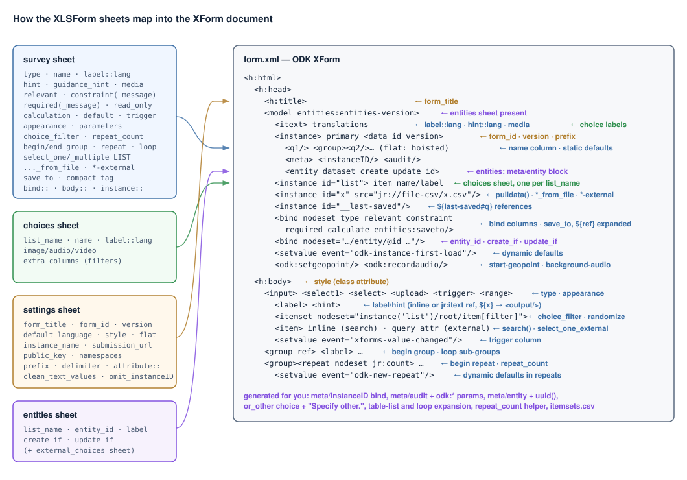

A1 · fx =convert(survey)
rxform convertit les classeurs XLSForm en XML ODK XForm — le format que parlent ODK Collect, Enketo et KoboToolbox. Une implémentation de pyxform en Rust : un binaire statique rapide, une sortie vérifiée formulaire par formulaire contre l’original, et des messages d’erreur qui pointent la cellule exacte.
| type | name | label | |
|---|---|---|---|
| 2 | select_one yes_no | good_day | Bonne journée aujourd’hui ? |
| 3 | begin repeat | visit | Chaque visite |
| 4 | geopoint | spot | Où êtes-vous ? |
<select1 ref="/data/good_day">
<itemset nodeset="instance('yes_no')/root/item">
<value ref="name"/>
</itemset>
</select1>
<repeat nodeset="/data/visit">…</repeat>
<bind type="geopoint" nodeset="/data/visit/spot"/>▌34/34
formulaires de référence identiques à pyxform 4.5.0
100%
de la spécification xlsform.org
65
tests figeant sortie et diagnostics
1
binaire statique — sans Python
B7 · quand le formulaire casse
Une coquille à la ligne 3 ne devrait pas ressembler à un rapport de crash. Chaque erreur de rxform
porte la feuille, la ligne et la colonne concernées — plus une cause probable :
le type de question le plus proche, la liste de choix sans doute visée,
la ligne du begin qu’un
end group égaré a oubliée.
$ rxform household_survey.xlsx
error: [sheet 'survey', row 12, column 'type'] unknown question type 'selct_one districts'
probable cause: did you mean 'select_one'?
$ rxform household_survey.xlsx
error: [sheet 'survey', row 48, column 'relevant'] '${distrct}' does not match
the name of any question or group
probable cause: did you mean 'district'?
$ rxform household_survey.xlsx
household_survey.xml▌C2 · feuille « fonctions »
Tout ce que décrit xlsform.org se convertit — chaque ligne ci-dessous a été vérifiée contre la sortie de pyxform.
| type | name | label | |
|---|---|---|---|
| 2 | select_one spec | question_types | Tous les types : texte → tracés géo, ranges, médias, codes-barres, rank, calculate, audit, métadonnées |
| 3 | begin repeat | structure | Groupes, répétitions (+ compteurs), boucles héritées, table-list, formulaires flat — imbriqués librement |
| 4 | select_multiple langs | multilanguage | label::Langue (code), aides traduites, médias et messages via <itext>, guidance hints |
| 5 | select_one_from_file | external_data | Selects CSV/XML/GeoJSON, pulldata(), search(), last-saved, select_one_external + itemsets.csv |
| 6 | text | entities | Créer et mettre à jour des entités : save_to, create_if/update_if, suivi de versions hors ligne |
| 7 | calculate | logic | ${refs} → xpaths, choice_filter en cascade, valeurs par défaut dynamiques, actions trigger, randomize |
| 8 | note | settings | Titres, ids, versions, styles, clés de chiffrement, namespaces, attributs personnalisés, tags SMS |
D4 · sous le capot
Classeur → cellules normalisées → arbre de questions → validation localisée → XML XForm, imprimé selon les conventions de pyxform pour que l’outillage existant retrouve ses repères.


E9 · démarrage rapide
Des binaires précompilés pour chaque plateforme accompagnent chaque
release GitHub —
Linux (musl statique + .deb), macOS et Windows.
macOS · Homebrew
Windows · Scoop
Partout · Cargo
# installer une fois
$ cargo install rxform
# convertir — écrit survey.xml à côté du fichier
$ rxform survey.xlsx
# ou choisir la destination / imprimer sur stdout
$ rxform survey.xlsx -o out/form.xml
$ rxform survey.xlsx --stdout// cargo add rxform
use std::path::Path;
let conversion = rxform::convert(Path::new("survey.xlsx"))?;
std::fs::write("form.xml", &conversion.xml)?;
if let Some(csv) = conversion.itemsets_csv {
std::fs::write("itemsets.csv", csv)?; // selects externes
}